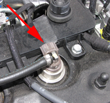

Injector programming must be performed after replacing one or several injectors. The injector code is noted on the injector, see figure.

After finished programming an injector calibration also has to be performed.
Test conditions:
Ignition on, engine off.
Procedure:
Press "OK" to start the function.
A dialogue box shows the old programmed injector code.
To enter new injector code, press "OK" and follow the instructions.
After successful programming the new injector code is shown.
If programming fails, check fault codes and that correct code is entered.